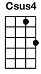

#T15 - 🔥Teenage Dirtbag
Wheatus
Level: Medium




Dev info?
(Intro)
[F] [C] [F] [Bb] x2
Her [F] name is No[C]elle... [F] I have a [Bb] dream about her
[F] She rings my [C] bell... I got [F] gym class in [Bb] half an hour
[F] Oh how she [C] rocks... in [F] keds and tube [Bb] socks
But [Dm] she doesn’t [Bb] know who I [Csus4] am [C]
And [Dm] she doesn’t [Bb] give a [Csus4] damn a[C]bout me
Cos [F] I’m just a [Bb] teenage [C] dirtbag [Dm//] baby [Am//]
Yeah [F] I’m just a [Bb] teenage [C] dirtbag [Dm//] baby [Am//]
[F] Listen to [Bb] Iron [C] Maiden [Dm/] baby, [Am/] with [F/] me
[Bb] Ooo-ooo [C] oooh
[Dm//] [Am//] [Bb//] [C//]
Her [F] boyfriend’s a [C] dick... [F] he brings a [Bb] gun to school
And [F] he’d simply [C] kick... my [F] ass if he [Bb] knew the truth
He [F] lives on my [C] block... and [F] drives an I[Bb]ROC
But [Dm] he doesn’t [Bb] know who I [Csus4] am [C]
And [Dm] e doesn’t [Bb] give a [Csus4] damn a[C]bout me
Cos [F] I’m just a [Bb] teenage [C] dirtbag [Dm//] baby [Am//]
Yeah [F] I’m just a [Bb] teenage [C] dirtbag [Dm//] baby [Am//]
[F] Listen to [Bb] Iron [C] Maiden [Dm/] baby, [Am/] with [F/] me
[Bb] Ooo-ooo [C] oooh
[Dm//] [Am//] [Bb//] [C//]
[F] [Bb] Oh yeaaa-[F]-ah [Bb] dirtbaaaa-[F]-aaa-[Bb]-ag
No [Dm/] she does[Am/]n’t know [Bb/]what she’s [C/]missing
[F] [Bb] Oh yeaaa-[F]-ah [Bb] dirtbaaaa-[F]-aaa-[Bb]-ag
No [Dm/] she does[Am/]n’t know [Bb/] what she’s [C] missing
[F] [C] [F] [Bb] x2
Man [F] I feel like [C] mould... it’s [F] prom night and [Bb] I am lonely
[F] Lo and be[C]hold... [F] she’s walking [Bb] over to me
[F] This must be [C] fake... my [F] lip starts to [Bb] shake
[Dm] How does she [Bb] know who I [Csus4] am [C]
And [Dm] why does she [Bb] give a [Csus4] damn a[C]bout me
I’ve got two [F]tickets to [Bb]Iron [C]Maiden [Dm//]baby [Am//]
[F]Come with me [Bb]Friday [C]don’t say [Dm//]maybe [Am//]
[F]I’m just a [Bb]teenage [C]dirtbag [Dm/]baby, [Am/]like [F/]you
[Bb] [C]
[Dm//] [Am//] [Bb//] [C//]
[F] [Bb] Oh yeaaa-[F]-ah [Bb] dirtbaaaa-[F]-aaa-[Bb]-ag
No [Dm/]she does[Am/]n’t know [Bb/]what she’s [C/]missing
[F] [Bb] Oh yeaaa-[F]-ah [Bb] dirtbaaaa-[F]-aaa-[Bb]-ag
No [Dm/]she does[Am/]n’t know [Bb/]what she’s [C/]mi-issi-ii-iing
[F] [C]... [F] [Bb]... [F] [C]...
[Dm//] [Am//] [Bb//] [C//]
[F/]